Learning Neural Control Barrier Functions from Expert Demonstrations using Inverse Constraint Learning
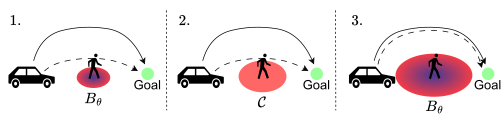
Abstract
Safety is a fundamental requirement for autonomous systems operating in critical domains. Control barrier functions (CBFs) have been used to design safety filters that minimally alter nominal controls for such systems to maintain their safety. Learning neural CBFs has been proposed as a data-driven alternative for their computationally expensive optimization-based synthesis. However, it is often the case that the failure set of states that should be avoided is non-obvious or hard to specify formally, e.g., tailgating in autonomous driving, while a set of expert demonstrations that achieve the task and avoid the failure set is easier to generate. We use ICL to train a constraint function that classifies the states of the system under consideration to safe, i.e., belong to a controlled forward invariant set that is disjoint from the unspecified failure set, and unsafe ones, i.e., belong to the complement of that set. We then use that function to label a new set of simulated trajectories to train our neural CBF. We empirically evaluate our approach in four different environments, demonstrating that it outperforms existing baselines and achieves comparable performance to a neural CBF trained with the same data but annotated with ground-truth safety labels.Experimental results
We evaluate ICL-CBF against iDBF, ROCBF, and L-CBF (neural CBF trained with ground-truth safety labels) on four scenarios: single integrator, inverted pendulum, Dubins car, and quadrotor. Metrics are collision rate (CR, %, lower is better) and success rate (SR, %, higher is better). ICL-CBF achieves the best CR/SR among methods that do not use ground-truth labels, and is close to L-CBF.
Single-integrator CBFs and constraint
Values of the learned constraint and neural CBFs. Black circles mark the obstacle. In (a), the red curve is \(\{\mathrm{x}\mid\hat{c}_\phi(\mathrm{x})=\delta\}\) and blue points are expert states. In (b)–(f), red contours are zero level sets of each (neural) CBF.
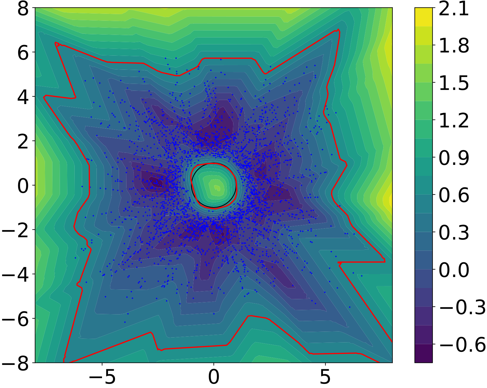
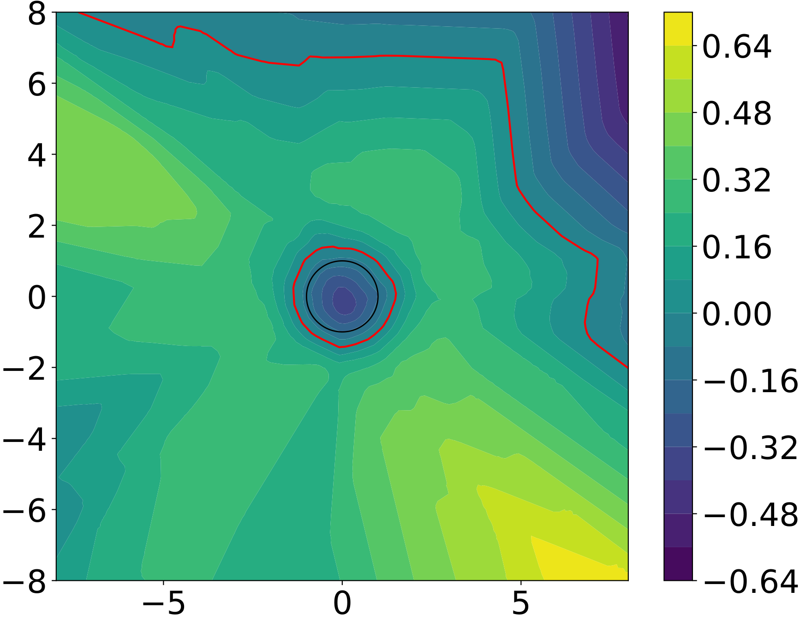
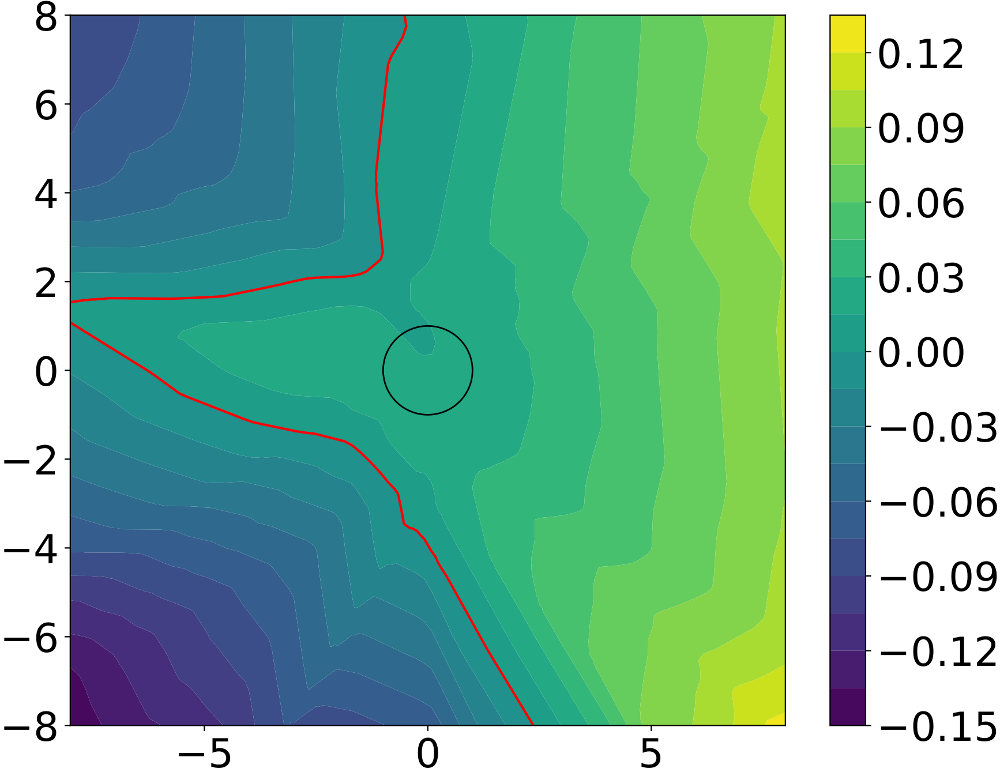
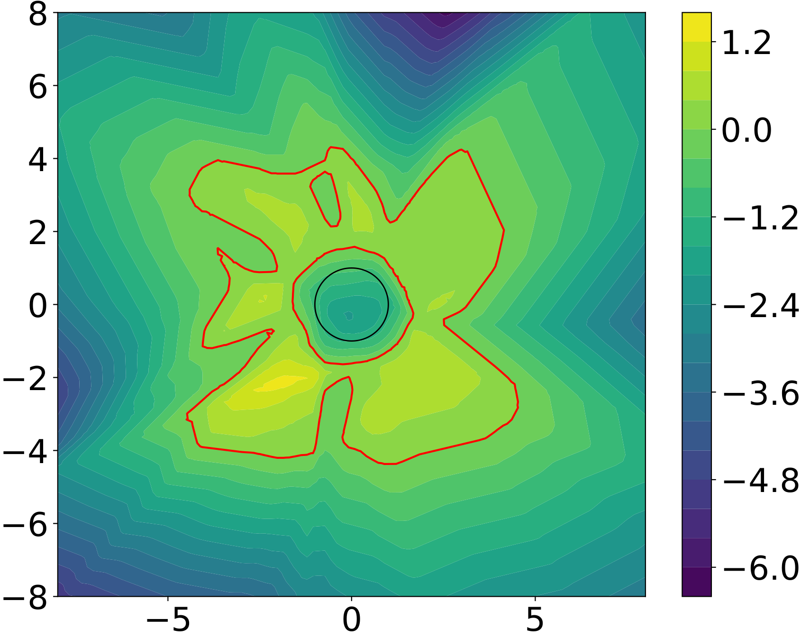
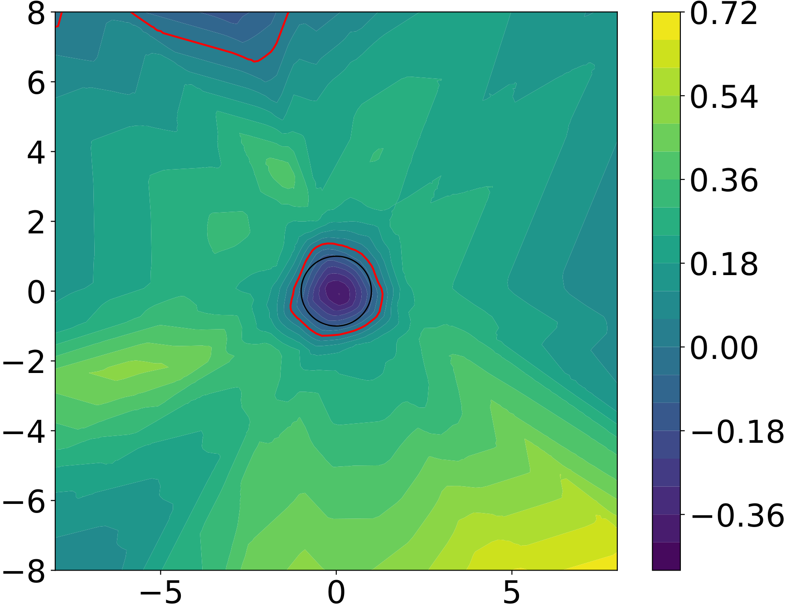
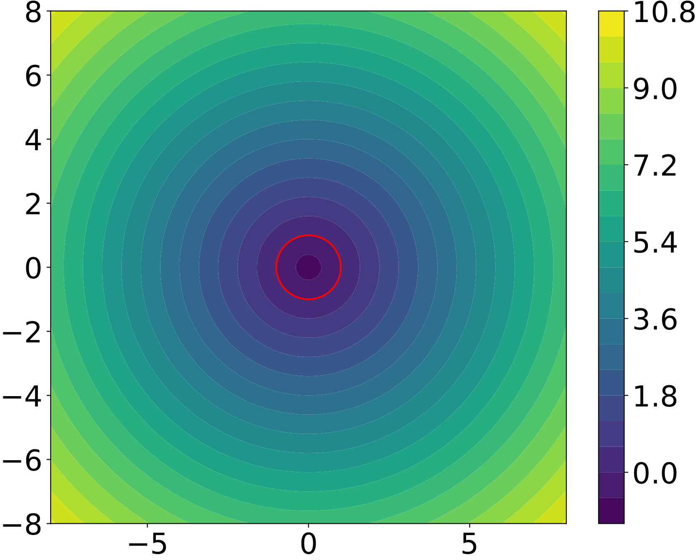
Inverted-pendulum trajectories
Neural CBFs with closed-loop trajectories under CBF-QP policies. Red points are initial states, green points (origin) are goals, and red contours are zero level sets. iDBF and ROCBF can reach the goal while entering the failure set; ICL-CBF and L-CBF intervene successfully.
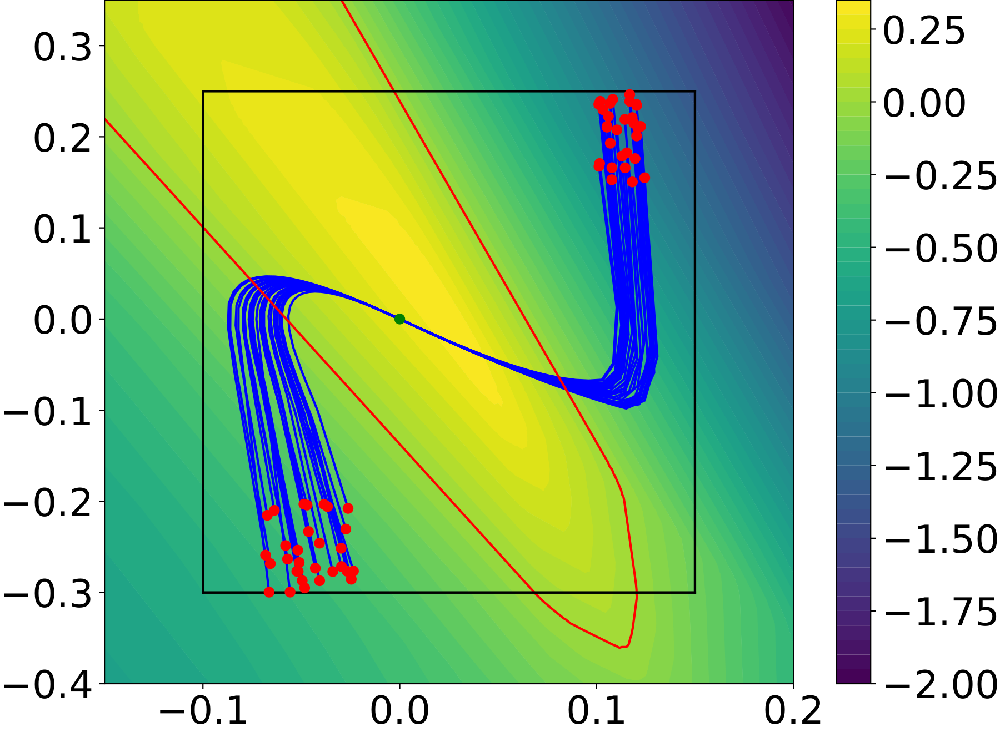
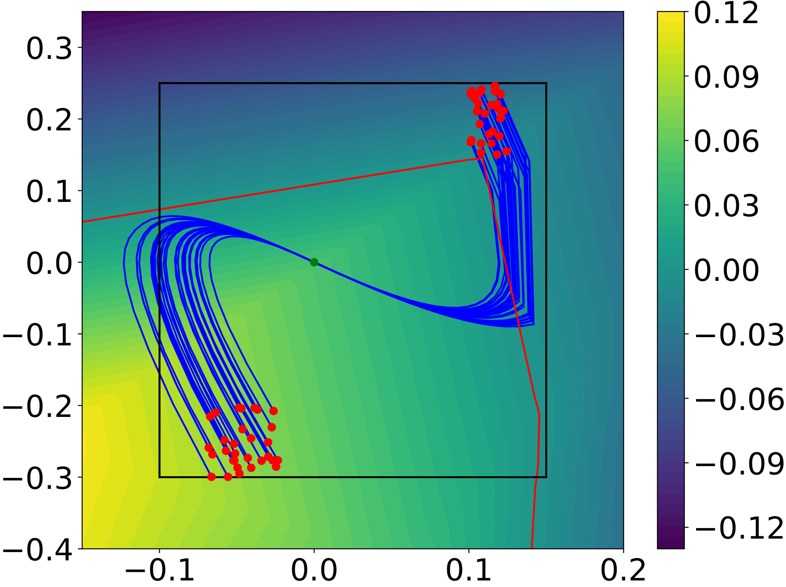
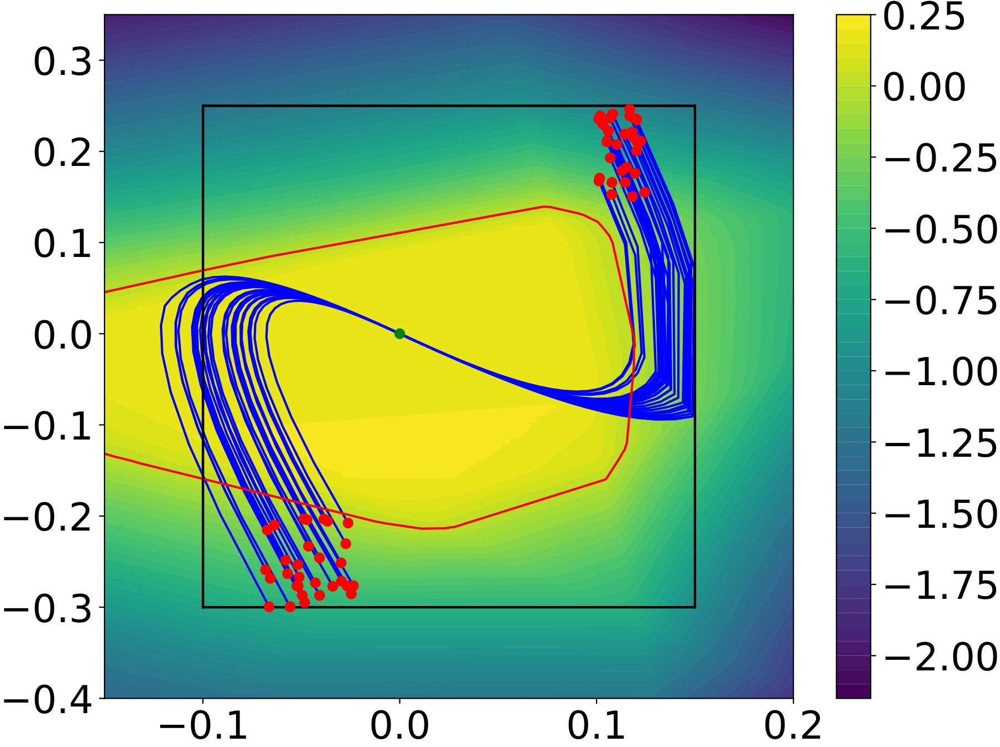
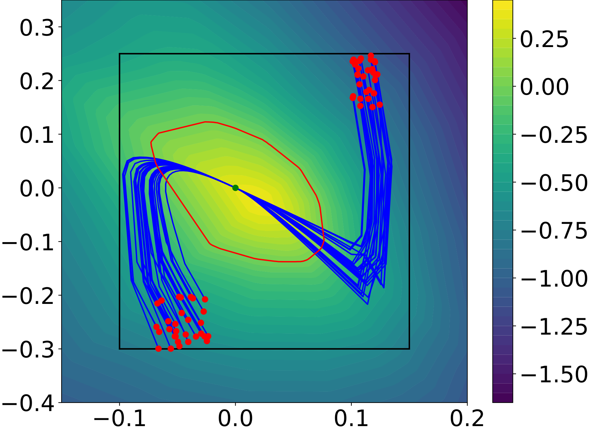
Closed-loop success and collision rates
| Task | Metric | iDBF | ROCBF | ICL-CBF (ours) | L-CBF |
|---|---|---|---|---|---|
| Single integrator | CR | 99.20 | 0.00 | 0.00 | 0.00 |
| SR | 0.80 | 9.80 | 80.60 | 86.20 | |
| Inverted pendulum | CR | 2.80 | 5.00 | 0.20 | 0.60 |
| SR | 97.20 | 95.00 | 99.80 | 99.40 | |
| Dubins car | CR | 0.00 | 69.30 | 1.80 | 0.30 |
| SR | 75.00 | 6.40 | 97.60 | 99.60 | |
| Quadrotor | CR | 65.70 | 75.00 | 17.10 | 1.50 |
| SR | 2.80 | 0.00 | 77.20 | 98.00 |
Bold highlights the best among iDBF / ROCBF / ICL-CBF. L-CBF uses ground-truth labels (upper bound).
Safety labels for inverted pendulum
Training data annotations: red = unsafe, blue = safe; black margins mark the predefined safe set. ICL labels are closest to L-CBF / ground truth.
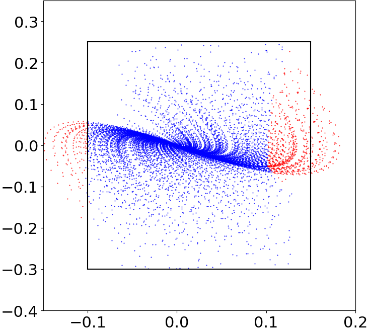
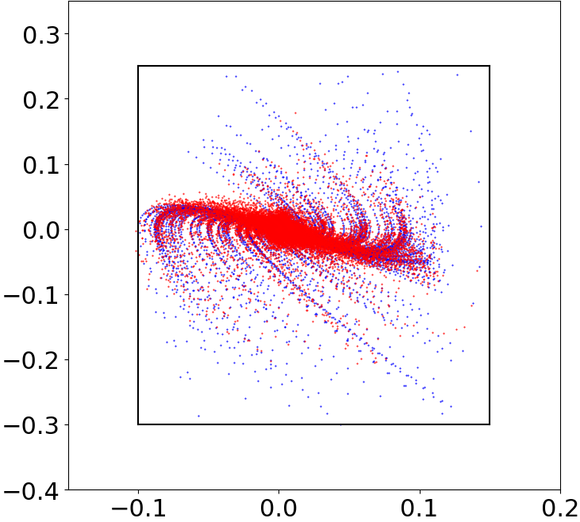
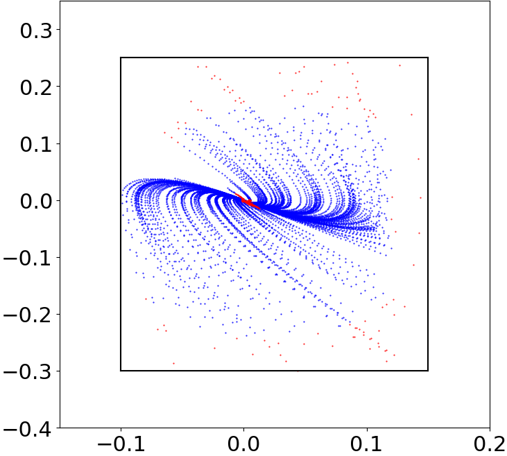
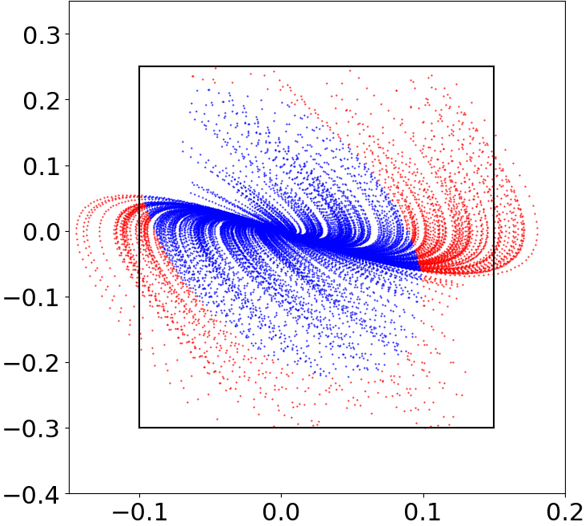
Sensitivity to \(\delta\)
Collision and success rates as the constraint threshold \(\delta\) varies (single integrator and Dubins car). Poor \(\delta\) can hurt performance; a grid search over \([0,1]\) finds strong settings (we use \(\delta=0.6\) in several tasks).
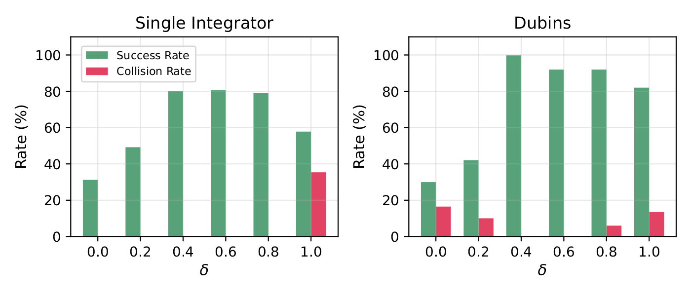
Poster

Citation
@misc{yang2025learningneuralcontrolbarrier,
title={Learning Neural Control Barrier Functions from Expert Demonstrations using Inverse Constraint Learning},
author={Yuxuan Yang and Hussein Sibai},
year={2025},
eprint={2510.21560},
archivePrefix={arXiv},
primaryClass={cs.AI},
url={https://arxiv.org/abs/2510.21560},
}